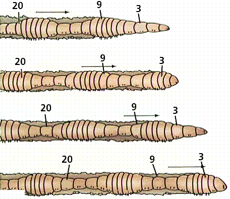
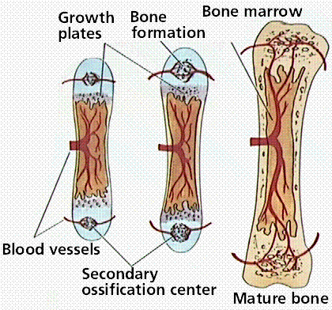
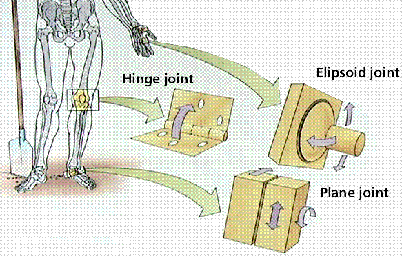
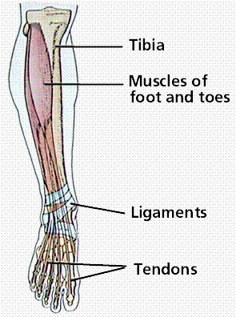
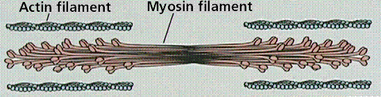
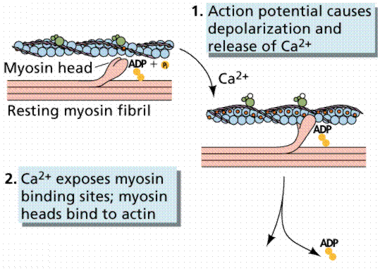
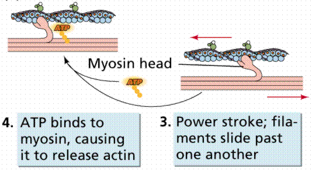
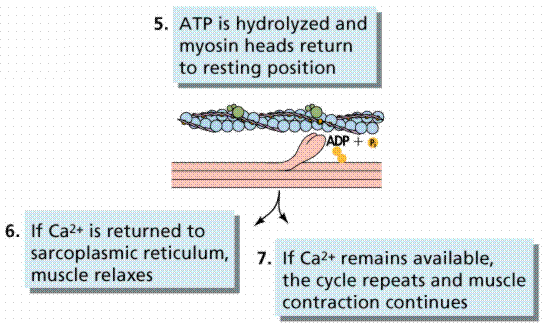

Types of Skeletal Systems | Functions of Muscles and Bones
The Axial and Appendicular Skeletons | Bone Tissue | Bone Growth
Joints | Skeletal Muscle Systems | Contraction of Nonmuscular Cells
Interaction of the Two Systems | Links
The single-celled protozoan ancestors of animals had their weight supported by water and were able to move by cilia or other simple organelles. The evolution of large and more complex organisms (animals) necessitated the development of support and locomotion systems. Animals use their muscular and skeletal systems for support, locomotion, and maintaining their shape.
Movement is a major characteristic of animals. This movement is a result of contraction of muscles. The skeleton helps transmit that movement. Skeletons are either a fluid-filled body cavity, exoskeletons, or internal skeletons.
Hydrostatic skeletons consist of fluid-filled closed chambers. Internal pressures generated by muscle contractions cause movement as well as maintain the shape of the animals, such as the sea anemone and worms. The sea anemone has one set of longitudinal muscles in the outer layer of the body, and a layer of circular muscles in the inner layer of the body. The anemone can elongate or contract its body by contracting one or the other set of muscles.

Structure and function of a hydrostatic skeleton. Images from Purves et al., Life: The Science of Biology, 4th Edition, by Sinauer Associates (www.sinauer.com) and WH Freeman (www.whfreeman.com), used with permission.
Exoskeletons are characteristic of the Phylum Arthropoda. Exoskeletons are hard segments that cover the muscles and visceral organs. Muscles for movement attach to the inner surface of the exoskeleton. Exoskeletons restrict the growth of the animal, thus it must shed its exoskeleton (or molt) to form a new one that has room for growth. The bulk and weight of the exoskeleton and associated mechanical problems limits the size animals can attain. Spiders use a combination of an exoskeleton for protection and fluid pressure for movement.
Exoskeleton of an insect and its relation to the muscular system. Image from Purves et al., Life: The Science of Biology, 4th Edition, by Sinauer Associates (www.sinauer.com) and WH Freeman (www.whfreeman.com), used with permission.
Vertebrates have developed an internal mineralized (in most cases) endoskeleton composed of bone and/or cartilage. Muscles are on the outside of the endoskeleton. Cartilage and bone are types of connective tissue. Sharks, and rays have skeletons composed entirely of cartilage; other vertebrates have an embryonic cartilage skeleton progressively replaced by bone as they mature and develop. Some areas of the human body, however, retain cartilage in the adult: in joints and flexible structures such as the ribs, trachea, nose and ears.
The human endoskeleton. Image from Purves et al., Life: The Science of Biology, 4th Edition, by Sinauer Associates (www.sinauer.com) and WH Freeman (www.whfreeman.com), used with permission.
The skeleton and muscles function together as the musculoskeletal system. This system (often treated as two separate systems, the muscular, and skeletal) plays an important homeostatic role: allowing the animal to move to more favorable external conditions. Certain cells in the bones produce immune cells as well as important cellular components of the blood. Bone also helps regulate blood calcium levels, serving as a calcium sink. Rapid muscular contraction is important in generating internal heat, another homeostatic function.
The axial skeleton consists of the skull, vertebral column, and rib cage. The appendicular skeleton contains the bones of the appendages (limbs, wings, or flippers/fins), and the pectoral and pelvic girdles.
The human skull, or cranium, has a number of individual bones tightly fitted together at immovable joints. At birth many of these joints are not completely sutured together as bone, leading to a number of "soft spots" or fontanels, which do not completely join until the age of 14-18 months.
The vertebral column has 33 individual vertebrae separated from each other by a cartilage disk. These disks allow a certain flexibility to the spinal column, although the disks deteriorate with age, producing back pain. The sternum is connected to all the ribs except the lower pair. Cartilage allows for the flexibility of the rib cage during breathing.
The arms and legs are part of the appendicular skeleton. The upper bones of the limbs are single: humerus (arm) and femur (leg). Below a joint (elbow or knee), both limbs have a pair of bones (radius and ulna in the arms; tibia and fibula in legs) that connect to another joint (wrist or ankle). The carpals makeup the wrist joint; the tarsals are in the ankle joint. Each hand or foot ends in 5 digits (fingers or toes) composed of metacarpals (hands) or metatarsals (feet).
Limbs are connected to the rest of the skeleton by collections of bones known as girdles. The pectoral girdle consists of the clavicle (collar bone) and scapula (shoulder blade). The humerus is joined to the pectoral girdle at a joint and is held in place by muscles and ligaments. A dislocated shoulder occurs when the end of the humerus slips out of the socket of the scapula, stretching ligaments and muscles. The pelvic girdle consists of two hipbones that form a hollow cavity, the pelvis. The vertebral column attaches to the top of the pelvis; the femur of each leg attaches to the bottom. The pelvic girdle in land animals transfers the weight of the body to the legs and feet. Pelvic girdles in fish, which have their weight supported by water, are primitive; land animals have more developed pelvic girdles. Pelvic girdles in bipeds are recognizable different from those or quadrupeds.
Although bones vary greatly in size and shape, they have certain structural similarities. Bones have cells embedded in a mineralized (calcium) matrix and collagen fibers. Compact bone forms the shafts of long bones; it also occurs on the outer side of the bone. Spongy bone forms the inner layer.
Structure of bone, a type of connective tissue. Image from Purves et al., Life: The Science of Biology, 4th Edition, by Sinauer Associates (www.sinauer.com) and WH Freeman (www.whfreeman.com), used with permission.
Compact bone has a series of Haversian canals around which concentric layers of bone cells (osteocytes) and minerals occur. New bone is formed by the osteocytes. The Haversian canals form a network of blood vessels and nerves that nourish and monitor the osteocytes.
Spongy bone occurs at the ends of long bones and is less dense than compact bone. The spongy bone of the femur, humerus, and sternum contains red marrow, in which stem cells reproduce and form the cellular components of the blood and immune system. Yellow marrow, at the center of these bones, is used to store fats. The outer layer of the bones is known as the periosteum. The inner layer of the periosteum forms new bone or modifies existing bone to meet new conditions. It is rich in nerve endings and blood and lymphatic vessels. When fractures occur, the pain is carried to the brain by nerves running through the periosteum.
Endochondral ossification is the process of converting the cartilage in embryonic skeletons into bone. Cartilage is deposited early in development into shapes resembling the bones-to-be. Cells inside this cartilage grow and begin depositing minerals.
The spongy bone forms, and osteoblasts attach and lay down the mineral portions of spongy bone. Osteoclasts remove material from the center of the bone, forming the central cavity of the long bones. The perichondrium, a connective tissue, forms around the cartilage and begins forming compact bone while the above changes are occurring. Blood vessels form and grow into the perichondrium, transporting stem cells into the interior. Two bands of cartilage remain as the bone develops, one at each end of the bone. During childhood, this cartilage allows for growth and changes in the shape of bones. Eventually the elongation of the bones stops and the cartilage is all converted into bone.

Growth of a long bone. Images from Purves et al., Life: The Science of Biology, 4th Edition, by Sinauer Associates (www.sinauer.com) and WH Freeman (www.whfreeman.com), used with permission.
Bones continue to change as adults, to adapt to the stresses generated by physical activity. Exercise can increase the diameter and strength of bone; inactivity can decrease them. Age is a factor: osteoporosis is a disease that primarily affects older, postmenopausal women. Increasing calcium intake, reducing protein intake, exercise and low doses of estrogen are effective treatments for osteoporosis.
There are three types of joints: immovable, partly movable, and synovial. Immovable joints, like those connecting the cranial bones, have edges that tightly interlock. Partly movable joints allow some degree of flexibility and usually have cartilage between the bones; example: vertebrae. Synovial joints permit the greatest degree of flexibility and have the ends of bones covered with a connective tissue filled with synovial fluid; example: hip.
The outer surface of the synovial joints contains ligaments that strengthen joints and hold bones in position. The inner surface (the synovial membrane) has cells producing synovial fluid that lubricates the joint and prevents the two cartilage caps on the bones from rubbing together. Some joints also have tendons (connective tissue linking muscles to bones). Bursae are small sacs filled with synovial fluid that reduce friction in the joint. The knee joint contains 13 bursae

Joints of the human body. Images from Purves et al., Life: The Science of Biology, 4th Edition, by Sinauer Associates (www.sinauer.com) and WH Freeman (www.whfreeman.com), used with permission.
Injury, degenerative wear and tear, and inflammatory disorders affect joints. Sprains are common injuries that cause ligaments to rip of separate from the bone. Tendinitis (such as tennis elbow) and bursitis are inflammations of the tendon sheaths.
Osteoarthritis is a degenerative condition associated with the wearing away of the protective caps of cartilage covering the bone-ends. Bony growths or spurs develop as the cartilage degenerates, causing restriction of movement and pain. The cause is not known and may just be wear-and-tear associated with aging.
Rheumatoid arthritis is a severely damaging arthritis that begins with inflammation and thickening of the synovial membrane followed by bone degeneration and disfigurement. More women than men are affected. There may be a genetic predisposition to rheumatoid arthritis. Joint replacement may in some cases restore function.
Vertebrates move by the actions of muscles on bones. Tendons attach many skeletal muscles across joints, allowing muscle contraction to move the bones across the joint. Muscles generally work in pairs to produce movement: when one muscle flexes (or contracts) the other relaxes, a process known as antagonism.

Ligaments and tendons of the arm and leg. Images from Purves et al., Life: The Science of Biology, 4th Edition, by Sinauer Associates (www.sinauer.com) and WH Freeman (www.whfreeman.com), used with permission.
Muscles have both electrical and chemical activity. There is an electrical gradient across the muscle cell membrane: the outside is more positive than the inside. Stimulus causes an instantaneous reversal of this polarity, causing the muscle to contract (the mechanical characteristic) producing a twitch or movement.
Organization of a muscle. Image from Purves et al., Life: The Science of Biology, 4th Edition, by Sinauer Associates (www.sinauer.com) and WH Freeman (www.whfreeman.com), used with permission.
Muscle fibers are multinucleated, with the nuclei located just under the plasma membrane. Most of the cell is occupied by striated, thread-like myofibrils. Within each myofibril there are dense Z lines. A sarcomere (or muscle functional unit) extends from Z line to Z line. Each sarcomere has thick and thin filaments. The thick filaments are made of myosin and occupy the center of each sarcomere. Thin filaments are made of actin and anchor to the Z line.
Fine structure of a muscle fiber. Image from Purves et al., Life: The Science of Biology, 4th Edition, by Sinauer Associates (www.sinauer.com) and WH Freeman (www.whfreeman.com), used with permission.
Muscles contract by shortening each sarcomere. The sliding filament model of muscle contraction has thin filaments on each side of the sarcomere sliding past each other until they meet in the middle. Myosin filaments have club-shaped heads that project toward the actin filaments.
Electron micrograph of the banding of a muscle fiber. Image from Purves et al., Life: The Science of Biology, 4th Edition, by Sinauer Associates (www.sinauer.com) and WH Freeman (www.whfreeman.com), used with permission.
Myosin heads attach to binding sites on the actin filaments. The myosin heads swivel toward the center of the sarcomere, detach and then reattach to the nearest active site of the actin filament. Each cycle of attachment, swiveling, and detachment shortens the sarcomere 1%. Hundreds of such cycles occur each second during muscle contraction.

The roles of actin and myosin in muscle contration. Images from Purves et al., Life: The Science of Biology, 4th Edition, by Sinauer Associates (www.sinauer.com) and WH Freeman (www.whfreeman.com), used with permission.
Energy for this comes from ATP, the energy coin of the cell. ATP binds to the cross bridges between myosin heads and actin filaments. The release of energy powers the swiveling of the myosin head. Muscles store little ATP and so must recycle the ADP into ATP rapidly. Creatine phosphate is a muscle storage product involved in the rapid regeneration of ADP into ATP.
Calcium ions are required for each cycle of myosin-actin interaction. Calcium is released into the sarcomere when a muscle is stimulated to contract. This calcium uncovers the actin binding sites. When the muscle no longer needs to contract, the calcium ions are pumped from the sarcomere and back into storage.



Contraction of a muscle fiber. Images from Purves et al., Life: The Science of Biology, 4th Edition, by Sinauer Associates (www.sinauer.com) and WH Freeman (www.whfreeman.com), used with permission.
Neuromuscular junctions are the point where a motor neuron attaches to a muscle. Acetylcholine is released from the axon end of the nerve cell when a nerve impulse reaches the junction. A wave of electrical changes are produced in the muscle cell when the acetylcholine binds to receptors on its surface. Calcium is released from its storage area in the cell's endoplasmic reticulum. An impulse from a nerve cell causes calcium release and brings about a single, short muscle contraction called a twitch.
Skeletal muscles are organized into hundreds of motor units, each of which is a motor neuron and a group of muscle fibers. A graded response to a circumstance will involve controlling the number of motor units. While individual muscle units contract as a unit, the entire muscle can contract on a graded basis due to their organization into motor units.
Actin and myosin, whose interaction causes muscle contraction, occur in many other cells. Actin is attached to the inner surface of the plasma membrane. The interaction of cytoplasmic myosin and this actin causes contraction of the cell, such a the coordinated contractions of intestinal cells to absorb nutrients.
Some fish have modified muscles that discharge electricity. These fish have electric organs consisting of modified muscles known as electroplates. The South American electric eel has more than 6000 plates arranged into 70 columns. Maximum discharge is 100 watts.
Vertebrates move by application of the principles of the lever. Levers amplify or increase the force or velocity of motion. The amount of amplification depends on the length of the lever. There are three types of skeletal system, all interact with muscles using the lever.
Back to Table of Contents | Go To THE RESPIRATORY SYSTEM
Email: mj.farabee@emcmail.maricopa.edu
Last modified:
The URL of this page is: